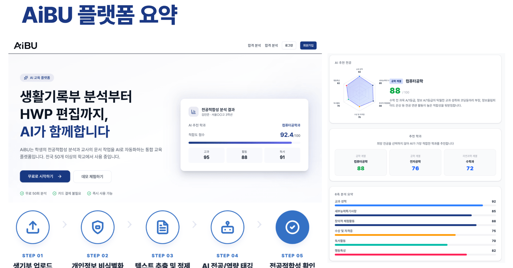
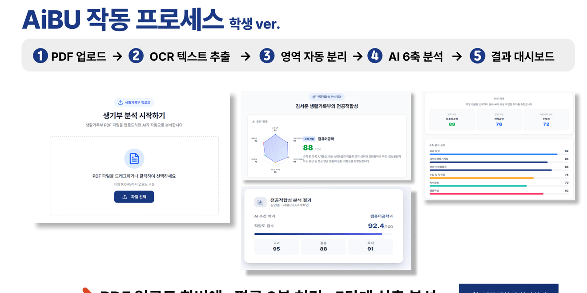
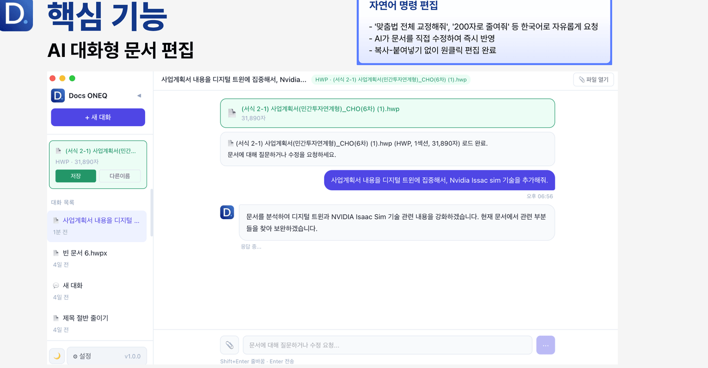
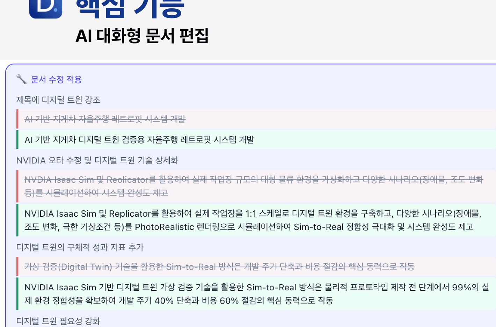

AiBU
생활기록부 분석부터 HWP 편집까지
PDF 업로드, OCR 추출, 6축 분석, 전공 적합성 대시보드를 한 번에 제공합니다.
- 학생용 진로 가이드와 전공 적합성 확인
- 교사용 세특·생기부 초안 자동 생성
- NEIS 바이트 계산과 문장 수정 제안
AI SaaS for schools, students, and expert documents
EduONEQ는 AiBU와 Docs ONEQ를 통해 학생 기록 분석, 생활기록부 작성, 한글 문서 편집을 하나의 AI 업무 흐름으로 연결합니다.
Platforms
학생은 활동과 기록을 더 정확하게 이해하고, 교사는 반복 문서 작업을 줄이며, 기관은 데이터 기반 교육 서비스를 빠르게 확장할 수 있습니다.
PDF 업로드, OCR 추출, 6축 분석, 전공 적합성 대시보드를 한 번에 제공합니다.
HWP 문서를 불러와 자연어 명령으로 보강, 요약, 문장 다듬기, 형식 정리를 수행합니다.
AiBU
AiBU는 생활기록부 PDF를 분석해 교과, 활동, 독서, 세부능력특기사항을 구조화하고 전공 적합성 결과와 개선 방향을 제안합니다.

Workflow
생활기록부와 HWP 자료를 업로드합니다.
텍스트를 추출하고 항목별 의미를 분리합니다.
전공, 역량, 활동 근거를 구조화합니다.
대시보드와 문서 편집으로 바로 이어집니다.


Docs ONEQ
Docs ONEQ는 HWP 문서를 분석하고 한국어 명령을 바탕으로 문장을 다듬거나 내용을 보강합니다. 복사·붙여넣기 없이 문서 안에서 수정 흐름을 이어갈 수 있습니다.
Document Intelligence

Proof of concept
첨부 자료 기준의 PoC와 제품 소개 지표를 랜딩 페이지의 신뢰 신호로 정리했습니다.
30명 기준 업무 시간을 83% 단축하는 교사용 흐름을 제시합니다.
기관 고객을 대상으로 실효성을 검증하고 수주 성과를 확보했습니다.
검증 과정에서 높은 만족도와 현장 적용 가능성을 확인했습니다.
Launch www.eduoneq.com
정적 사이트 구조라 AWS S3·CloudFront, Amplify, Vercel, Netlify 어디든 빠르게 올릴 수 있습니다. 후이즈 도메인은 배포처가 주는 DNS 값으로 네임서버 또는 레코드를 연결하면 됩니다.